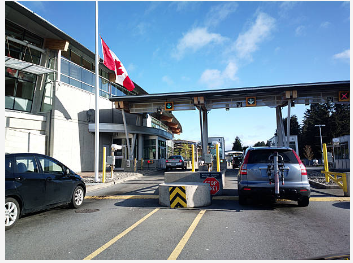

I am pleased to submit to you the Thirty-Second Annual Report to the Prime Minister on the Public Service of Canada, covering the period from April 1, 2024, to March 31, 2025.
It is an honour to lead the Public Service as we work together to support Canadians’ prosperity, safety, and quality of life. We are committed to delivering the Government’s ambitious agenda for Canada, as laid out in the Speech from the Throne, which was delivered by His Majesty The King on May 27, 2025.
As we embark on delivering your Government’s transformational agenda for Canada, we remain committed to building a culture of excellence—both in what we do and how we deliver. While we sometimes experience setbacks, we learn from them and old ourselves accountable to make progress. We strive to serve with excellence and to build trust in our institutions through collaborative partnerships and by consulting with communities in all regions of Canada to make sure we are meeting their needs.
In a global context where Canada must respond quickly to unexpected threats to protect what we have built as a nation; we are ready to operate with the urgency, agility, and coordination needed to meet the expectations of your Government and Canadians. This includes supporting your commitment to balancing the Government’s operational budget over the next three years. We will look to improve public service productivity by deploying technology, such as AI, responsibly. We will do this while strengthening our digital skills and capacity so that we can keep pace as new technologies emerge.
This report is a testament to the dedication of public servants across the country, and those serving abroad, who responded effectively to significant challenges this year. It illustrates how Canadians can rely on us in times of crisis, underscoring our ongoing efforts to ensure healthy and safe workplaces support us in achieving these results for Canada.
I am tremendously proud how the Public Service remained steadfast and united in its role this year. We upheld Canada’s longstanding tradition of peaceful transition of power, guided by our values of respect for democracy and for people, while showing resilience and determination in combatting threats to our economy and to our sovereignty as a nation.
I am confident that we will rise to the occasion and eagerly take on any unforeseen challenges that may lie ahead.
Sincerely,
John Hannaford
Clerk of the Privy Council and Secretary to the Cabinet
Introduction
In a time marked by global instability and economic uncertainty, the Public Service of Canada has remained resilient and steady while serving our Government and Canadians. We have worked tirelessly to safeguard Canada’s interests and democratic institutions, managing the orderly transition between prime ministers, supporting fair and secure elections, and responding quickly to complex economic conditions. The strength we have demonstrated as an institution this year has brought us closer together as a nation and reinvigorated our sense of pride and unity.
As we dedicate ourselves to delivering the new and ambitious government agenda, the Public Service will once again translate vision into action. Through our partnerships with all sectors and communities across the country, we will deliver inclusive and impactful programs and services that benefit all Canadians. This next chapter is an opportunity to lead with a renewed commitment to excellence in the Public Service so that we can further deliver meaningful results for Canadians.
As we move forward with this next phase, we are grounded by our shared value of stewardship and will support the Government’s commitment to reducing the growth of annual public service operating costs. We will hold ourselves accountable every step of the way.
This year’s report highlights how the Public Service delivered results guided by our purpose, standard of excellence, and our shared values. It also outlines the progress made on the priorities I identified in the Thirty-First Annual Report to the Prime Minister on the Public Service of Canada and looks ahead to three key strategic areas that can help guide and shape renewal of the Public Service in committing to a culture of excellence.
The past year has taught us that our foundation is strong. What unites us —our shared commitment to service, values, and ethics—is also what defines us. From supporting Canadians through economic uncertainty to responding to geopolitical shocks, the Public Service has demonstrated time and time again that we are here for Canadians.
The year in review
The past year saw the Public Service rise to meet extraordinary demands with quiet resolve and professional excellence. Public servants worked together to manage an intense period of government transition leading up to the federal election in April 2025. They also addressed pressures on affordability, our housing system, our economy, and our sovereignty. Despite the heightened focus in these areas, public servants did not ignore other critical initiatives and they continued to provide the essential services Canadians rely on.
Across the country and around the world, the Public Service achieved tangible results that improved day-to-day life for Canadians. This included such initiatives as:
Providing support for Canadians and our allies in regions experiencing international conflict;
Expanding access to healthcare through the Canadian Dental Care Plan;
Supporting wildfire recovery in Jasper;
Enabling secure technology transfers, and responsible adoption, to protect national innovation; and,
Supporting Canadians and Canadian businesses in the face of U.S. tariffs.
This year was a defining one in how we mobilize and prepare for what lies ahead on the global and domestic horizons. From the Values and Ethics Symposium that brought over 15,000 public servants together, to the responsible integration of new technologies like AI, renewal efforts took root across the system. This work is uniting the Public Service, allowing us to be more productive during a time of fiscal constraint, and helping us to navigate within the current threat environment to maintain and build the trust of all Canadians.
Service with excellence
Across departments and regions, public servants stepped up this year to meet urgent needs, to implement ambitious policies, and to support Canadians in moments of both crisis and opportunity.
This was especially visible in the response to global emergencies. We saw the ongoing conflicts and crisis situations escalating in Israel, the West Bank and the Gaza Strip, Syria, and Lebanon. Public servants at Global Affairs Canada were there to support over 10,800 Canadians, permanent residents, and their families seeking assistance in the region. The Standing Rapid Deployment Team deployed 80 members to the Middle East to provide critical support to seven missions, despite the volatile situation. Their work enabled the safe departure of more than 1,200 Canadians, permanent residents, and their families—providing not just protection, but also peace of mind.
When the government of Haiti declared a state of emergency in Ouest Department due to the deteriorating security situation, Canada responded with international assistance to strengthen the security sector and to help restore the rule of law. Since then, public servants have been providing 24/7 emergency consular assistance to Canadians in Haiti through the Emergency Watch and Response Centre and the Embassy of Canada to Haiti, in Port-au-Prince.
That same spirit of vigilance and dedication was at work here at home. We have been strengthening our borders and increasing security to keep Canadians safe.
In October 2024, the Canada Border Services Agency’s Ontario Firearms Smuggling Enforcement Team led a major investigation that dismantled an illicit narcotics lab. They intercepted dangerous substances, including MDMA, cocaine, methamphetamine, and fentanyl, along with other illegal items.
The Canada Border Services Agency’s Ontario Firearms Smuggling Enforcement Team is diligently working to keep Canadians safe. This investigation resulted in the dismantling of an active narcotics lab and the seizure of illicit narcotics, firearms parts, ammunition, weapons, and currency. This significant threat to our communities has now been removed.

Canada’s Border Plan aims to add nearly 10,000 additional frontline personnel to strengthen border security.
Then, in December 2024, the Government announced Canada’s Border Plan to further bolster security, strengthen our immigration system, and contribute to ensuring Canada’s future prosperity. The plan includes efforts to fight fentanyl trafficking through enhanced border security measures such as new surveillance technology, chemical detection tools, and additional personnel. To further our efforts, former Royal Canadian Mounted Police Deputy Commissioner Kevin Brosseau was appointed as Canada’s new “Fentanyl Czar” in 2025. His mandate is focused on leading a coordinated national response with all levels of government, as well as working with U.S. counterparts, to prevent the production and trafficking of illegal fentanyl.
One of the most transformative achievements by public servants this year was the launch of the Canadian Dental Care Plan—a landmark initiative to expand access to oral health care. In just six months, the program approved over three million applications and delivered services to more than 1.2 million Canadians. The plan was implemented rapidly, thanks to a collaborative effort between Health Canada and Service Canada, supporting digital infrastructure, and front-line staff. As a result, barriers to accessing dental care have already been reduced for families, seniors, and children.
The effectiveness of coordinated delivery of services was also evident in other initiatives. For example, the Canada Revenue Agency launched a new online chat platform that allows Canadians to engage directly with agents on personal tax matters. The integration of live support has modernized service delivery and made it easier for people to access the help they need.
Working together to respond and deliver
Collaboration across the Public Service has been one of our greatest strengths. We are most successful when we come together to tackle challenges and respond to emerging issues. Time and again, we have demonstrated that bold and meaningful progress is made through unity and excellence.
This year, the Public Service played a vital role in upholding Canada’s democratic tradition, guided by its core values and a renewed focus on ethics. This was evident across three key events:
The prorogation of Parliament (January–March);
The transition of Prime Ministers in March; and,
Preparations for the April 28 federal election, and resumption of Parliament.
Throughout this period, public servants enabled a smooth and impartial transition of government, applying the caretaker convention with professionalism and integrity, and working to safeguard our democratic institutions from foreign interference. For example, the Security Intelligence Threats to Elections Task Force prepared for the general election this year by coordinating analysis efforts across government to get ahead of any potential threats to the democratic process.
Fostering a Culture of High-Performance and Accountability
A high-performing and accountable public service is built through ongoing renewal to strengthen our capacity and to improve our culture, workplace, processes, and systems. Renewal efforts have been central to advancing the key priorities I identified in the Thirty-First Annual Report to the Prime Minister on the Public Service of Canada. The examples that follow illustrate how public servants have been driving culture change to ensure we are performing at our best.
Bringing the Values and Ethics Dialogue to Life in our Day-To-Day Actions
Over the course of the last year, I was pleased to participate in many discussions on values and ethics with groups of highly engaged public servants across the country. Public servants from every region of Canada brought our values and ethics to life through engagement and dialogue.
The year ahead – Building a Culture of Public Service Excellence to Meet the Needs of Canadians
I am inspired by our vibrant dialogue about who we are, what we do, and how we do it. Those conversations are shaping how we define a culture of public service excellence.
A strong public service is an inclusive and accessible public service. We must collaborate, work efficiently, and be ready for whatever may come next. This also means exploring new ways of working and reviewing how our resources are being used to make sure they are positioned well to deliver results on the Government’s priorities. Our efforts to responsibly integrate AI into our day-to-day business is an example of how we are optimizing the tools at our disposal, so that we are as productive as we can be. To that end, I have set three priorities for the year ahead:
Achieving Results for Canada Together
Public servants should be proud of and inspired by the collaboration we saw across jurisdictions last year. In the face of economic uncertainty and unjustified trade actions, the Canadian federation came together. We will carry forward that shared purpose. To deliver results, we will share information, coordinate, find areas of common ground, reduce duplication, and streamline organizational structures.
Realignment of our programs and policies to realize the Government’s agenda will be informed by inclusive consultation and collaboration—from across the Public Service; from Canada’s regions, including northern and rural or remote areas; and from provincial, territorial, Indigenous governance, and municipal partners. We will remove barriers between jurisdictions and within the Public Service. And we will fortify our international relationships and trade partnerships to build a united and robust economy and society that upholds our democratic federal system. That is how we will get the best outcomes for all Canadians.
Ensuring the Public Service is High-Performing, Productive and Inclusive
We recognize the importance of managing our resources in a manner that upholds and promotes our shared value of stewardship. Going forward, we will deliver the Government’s commitment to improving government efficiency and accountability as part of a broader economic strategy for Canada. In 2024-25, we saw a modest decrease in the size of the federal public service. While we focus on optimizing public service operations by reducing our costs and increasing productivity, we must also ensure we maintain the capacity needed to deliver on the Government’s agenda and continue to improve outcomes for Canadians.
The Public Service will continue to support Canada’s ambitious economic agenda. To lead on the global stage, we must harness the strength of our people, geography, and natural resources. We must also ensure that regulatory, trade, and innovation systems are in line with long-term national prosperity and competitiveness. During the coming year and beyond, we will work towards building a public service that is ready to help navigate global shifts and domestic transformations alike.
The new AI Strategy prioritizes the development of internal capacity to adopt and govern emerging technologies. We will continue to integrate innovative tools into our day-to-day operations, including modernizing human resources and pay systems and advancing the development and use of AI tools. With these changes, we aim to see enhanced service delivery and reduced administrative burden, all while supporting evidence-based decision-making.
We must also continue to honestly and transparently address and dismantle the systemic barriers to inclusion and workplace well-being within all public service organizations. To be a transformative and effective public service, we must be representative of those we serve and have a deep understanding of our beautiful, rich, and diverse nation.
Our workspaces must be safe and accessible—both physically, and in our organizational culture. When we fall short of upholding our values, we need to address those situations promptly, proportionately, and transparently. We will strengthen accountability and recourse mechanisms so that public servants can have trust and confidence in these processes.
Strengthening Trust in the Public Service of Canada
Looking outward, we must also build trust with Canadians. In recent years, that trust has been tested. But with every interaction, we can strengthen our credibility.
We can earn the trust of Canadians in many ways:
Delivering timely services with integrity and accountability
Providing evidence and applying data-driven approaches
Developing regulations that keep Canadians safe
Getting work done that improves people’s quality of life
Spending public funds responsibly
Explaining our work transparently
Being representative of the Canadian Population
I will continue to rely on leaders across the Public Service to deliver excellence and to drive progress on your Government’s ambitious agenda. We must hold ourselves accountable for real and impactful transformation. And we will continue to align leadership competencies with institutional values, as well as introduce clear, measurable expectations for success.
To promote trust, I am encouraging all public service organizations to increase transparency in decision-making, proactively disclose information, and share more open data. We are entrusted with using public assets and our decisions on how and when to use them must be in line with our values and in the best interest of Canadians. This is particularly true in areas of high public scrutiny, such as procurement and any real or perceived conflicts of interest.
Conclusion
The achievements highlighted in this year’s report show how relentless public servants are in their pursuit of serving with excellence. I am profoundly grateful for the unwavering dedication and commitment that public servants demonstrate each and every day in delivering the Government’s agenda for Canadians.
We are operating in a time of accelerated transformation in so may ways, be it technological, economic, geopolitical, or societal. Our recent experience managing a seamless transition of government in a time of increasing global uncertainty has shown that the Public Service is capable of rising to the occasion with integrity, resolve, and purpose.
As we chart our way through a new set of uncertainties and take bold action to deliver the transformational changes you have laid out for us in your Government’s agenda, we are united by a common vision for excellence in the Public Service.
We will look to realize this vision through our next phase of renewal, supported by the solid foundation we have built by reaffirming our common purpose through the Renewed Dialogue on Values and Ethics and implementation of the Call to Action on Anti-Racism, Equity and Inclusion.
Our shared values of integrity and stewardship will remain front of mind as we continue to hold ourselves accountable for measurable results. In everything we do, we will learn from our successes and from our failures. We will recalibrate as needed to continue to drive progress. It is our willingness to learn, to confront hard truths, and to evolve with intention that defines the strength of our institution.